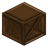

深色橡木小型储酒柜
Small Dark Oak Wine Bottle Storage
英文名: Small Dark Oak Wine Bottle Storage命名空间 ID:
vinery:dark_oak_wine_rack_small类型: 方块所属模组: [Let's Do] Vinery资料检索: 🔎 在 MC百科 搜索「深色橡木小型储酒柜」合成获得 (1)


原始 JSON
{
"type": "minecraft:crafting_shaped",
"group": "dark_oak_rack",
"pattern": [
"# #",
" _ ",
"# #"
],
"key": {
"#": {
"item": "minecraft:dark_oak_planks"
},
"_": {
"item": "minecraft:dark_oak_slab"
}
},
"result": {
"id": "vinery:dark_oak_wine_rack_small"
}
}